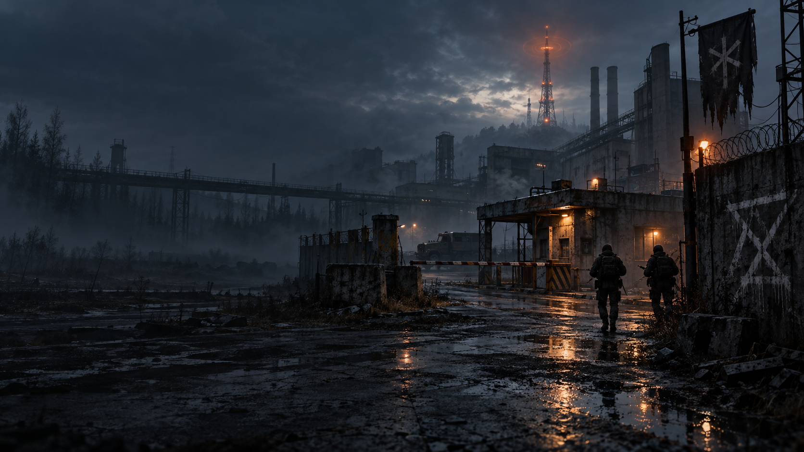
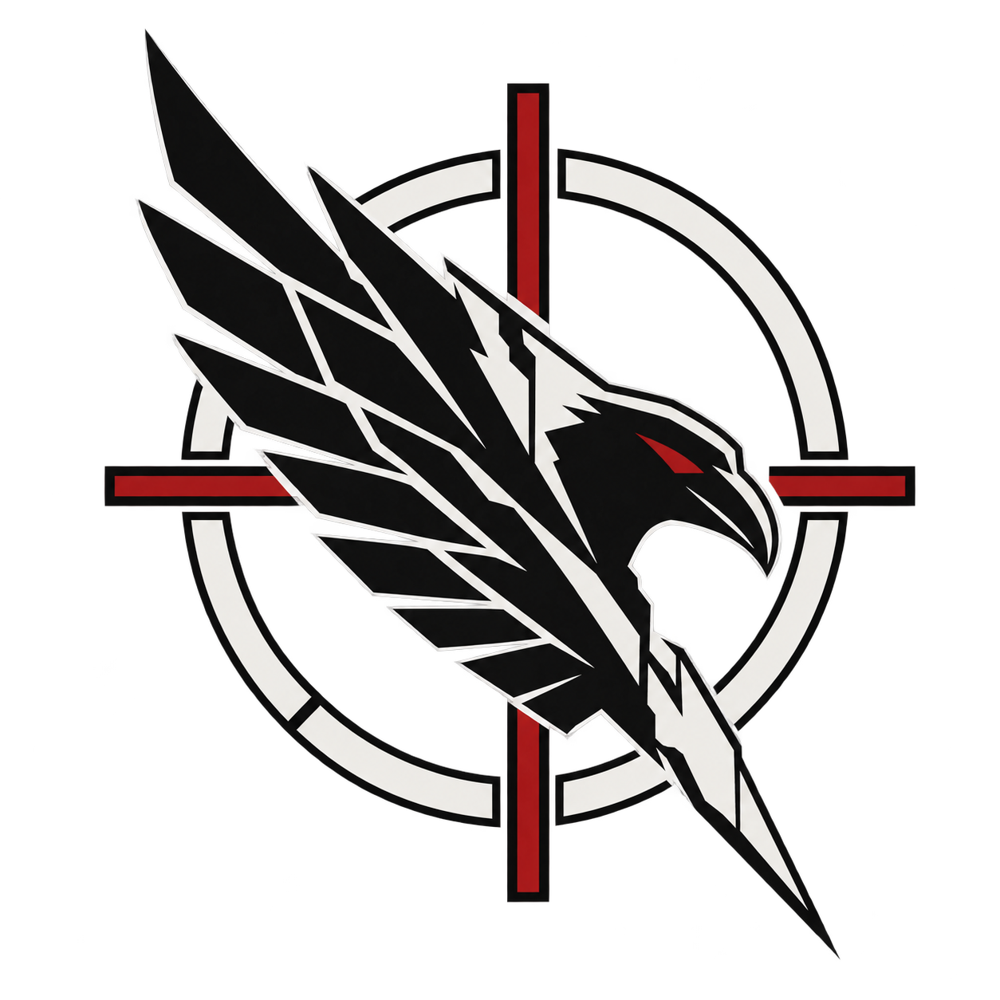
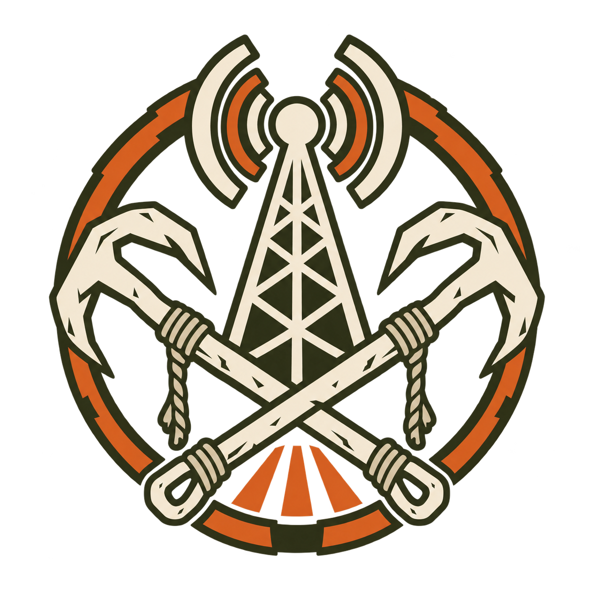

01
Корпоративный подрядчик
Aegis Response
Группа реагирования, связанная с охраной критической инфраструктуры и техническими эвакуациями на закрытых объектах.
Открыть публичное досье →
Передача 02:17 // Канал 12
Все отключённые передатчики карантинной зоны одновременно вышли в эфир. Ни голоса. Ни координат. Только идентификатор объекта, уничтоженного одиннадцать месяцев назад.
Операция // Москва
01 // Обстановка
После беспорядков, обрушения инфраструктуры и засекреченного инцидента промышленная зона Велески была закрыта. Эвакуация заняла шесть часов.
Документы лгут. В руинах остались склады, лаборатории, узлы связи — и те, кто отказался уходить. Теперь повторяющийся сигнал ведёт всех к ретранслятору № 12.
02 // Стороны конфликта
Открытые сведения не объясняют, зачем каждая группа прибыла к периметру. Они лишь показывают, кому предстоит столкнуться внутри.
Корпоративный подрядчик
Группа реагирования, связанная с охраной критической инфраструктуры и техническими эвакуациями на закрытых объектах.
Открыть публичное досье →
Статус не подтверждён
Название, которое появляется в документах исчезнувших подрядчиков. Единой зарегистрированной организации обнаружить не удалось.
Открыть публичное досье →
Местные выжившие
Сеть небольших общин внутри зоны. Их следами считают самодельные ретрансляторы и метки у технических входов.
Открыть публичное досье →03 // Протокол рейда
Пересечь периметр и закрепиться в секторе.
Найти пропуска, ресурсы и фрагменты передачи.
Заключать временные союзы — или нарушать их.
Добраться до активной точки эвакуации.
Допуск в зону